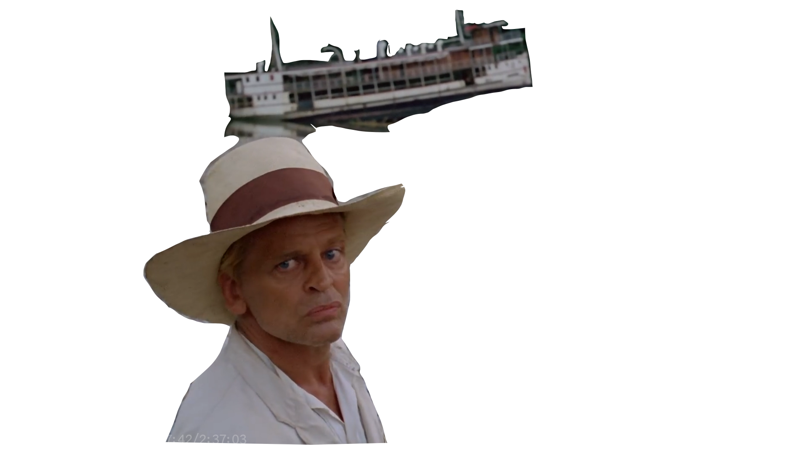
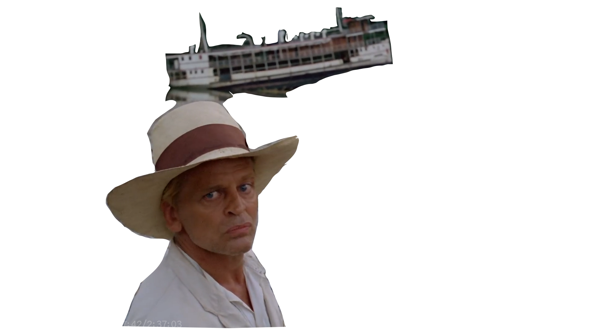
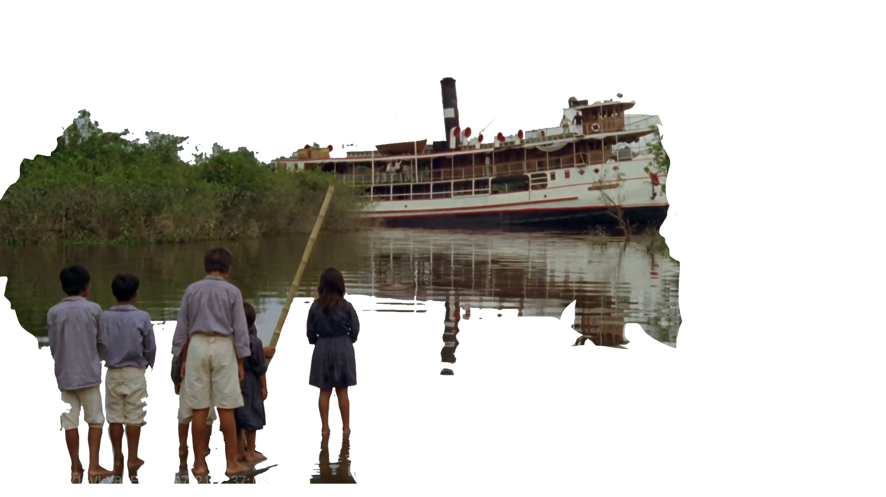
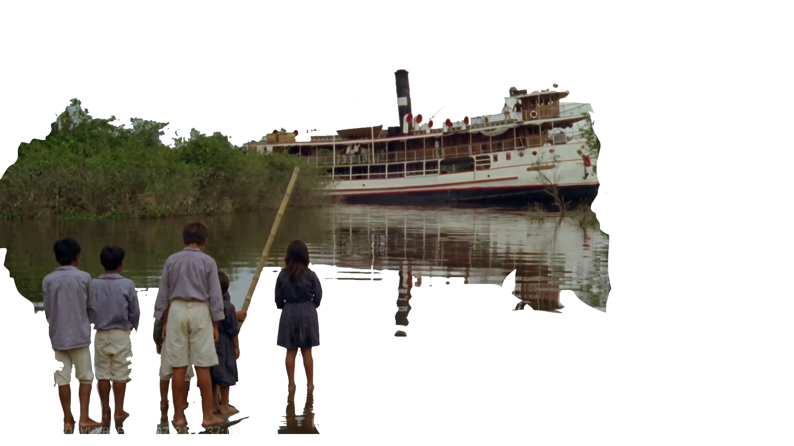

《飞向太空》
塔可夫斯基（苏联）
心理学家克里斯•凯尔文（Donatas Banionis 饰）在飞往索拉瑞斯星之前来到儿时的父母家与当年的索拉瑞斯飞行员亨利•伯顿（Vladislav Dvorzhetsky 饰）见面。伯顿警告凯尔文索拉瑞斯星上会有不可思议的奇事发生，但后者并不以为意。凯尔文离开前，当 着父亲（尼古莱•格陵柯Nikolai Grinko 饰）的面焚毁了自己的个人物品。凯尔文到达索拉瑞斯星附近的太空站后，对科学家奇巴瑞安博士（Sos Sargsyan 饰）之死进行调查，却发现自己多年前已经去世的妻子哈莉（Natalya Bondarchuk 饰）竟突然出现。惊慌失措的凯尔文与太空站上的科学家们讨论该如何面对怪事，却发现原来每人都深受其扰，不明就里……
《薄荷糖》
李沧东（韩国）
1999年春天，对生活绝望的中年男子金永浩（薛景求饰），落魄地参与了同学会，他神经质般哭叫，并在高架桥上面对迎面而来的火车嘶喊：我要回去！ 火车带着记忆倒走，三天前的金永浩已然崩溃，欲寻了断，但是被神秘人物叫去见一个人；再之后是1994年，他生活放荡，对妻子（金丽珍饰）冷若冰霜又出手大打；1987年身为警察的他，手段凶悍；1984年、1980年一直到1978年，直到第7个片段通过初恋情人（文素利饰）以及“薄荷糖”这一点题信物，影片才给出是什么碾压过主人公的生命，粉碎其美好的答案。
《陆上行舟》
赫尔佐格（德国）
20世纪初南美秘鲁。痴迷歌剧的白人菲茨杰拉德（克劳斯·金斯基 Klaus Kinski饰）被当地人称为空想家“菲茨卡拉多”。菲茨卡拉多经常做出一些令人无法理解的举动，尤其当他在巴西的亚马逊大剧院欣赏到世界著名男高音卡鲁索的演出之后，居然萌生出要在秘鲁小镇上也修建出一座宏大剧院的疯狂念头。为了获得足够的资金，菲茨卡拉多接受了当地橡胶大亨向他提出到神秘恐怖的乌圭里亚林区进行收割的任务，一段惊险刺激的旅程随之开始。

 



 
